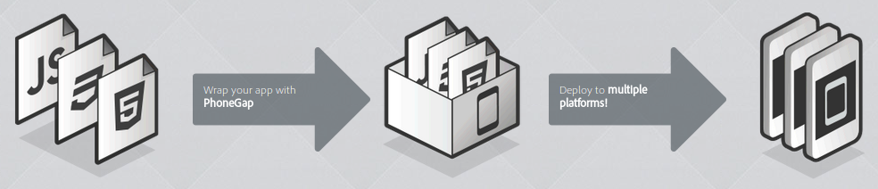
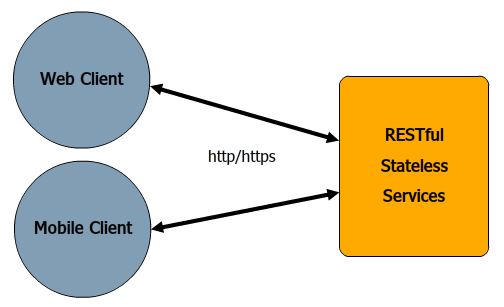
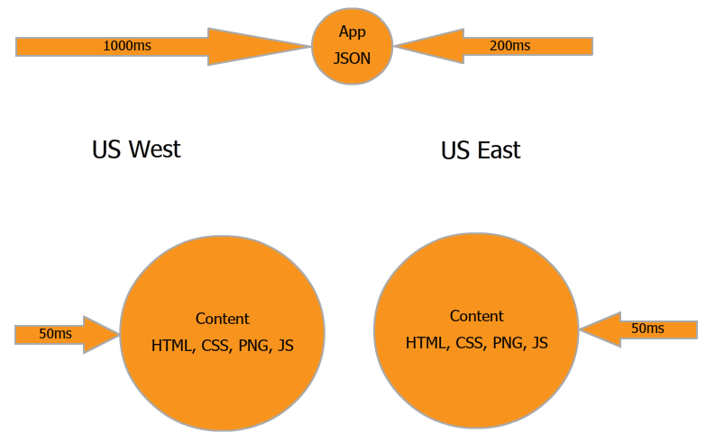

Client/Server Apps with HTML5 & Java
James Ward
Modern Web Apps - Why?
- Performance
- Faster Development Iterations
- Reuse code for web, mobile, etc 
Modern Web Apps
- Stateless Web Tier
- Client/Server Web & Mobile Apps
- Transparent Real-time
Stateless Web Tier
- Server un-affinity = Scalability & Upgrades
- Continuous Delivery
- Doesn't fight with HTTP
Client/Server Web & Mobile Apps

- RESTful Services
- Web and/or Mobile Clients
- Client on a CDN
HTML5
HTML5 is a markup language for structuring and presenting content for the World Wide Web, and is a core technology of the Internet originally proposed by Opera Software.[2] It is the fifth revision of the HTML standard (created in 1990 and standardized as HTML4 as of 1997)[3] and, as of October 2012, is still under development. Its core aims have been to improve the language with support for the latest multimedia while keeping it easily readable by humans and consistently understood by computers and devices (web browsers, parsers, etc.). HTML5 is intended to subsume not only HTML 4, but XHTML 1 and DOM Level 2 HTML as well.
The browser is an application platform.
HTML5
- New tags:
<video> <section> <article> <header> <footer>
- New APIs:
Offline, Drag & Drop, Web Storage, Location, etc
- CSS3
- Faster JavaScript!!!
HTML5 == Platform for Modern Web Apps
Evolving Tools & Libraries
- jQuery
- CSS Libraries: Bootstrap, etc
- JavaScript Alternatives: CoffeeScript, TypeScript, etc
- MVC Frameworks: Backbone, Angular, etc
- Client-side Templating: Mustache, dust.js, etc
- Testing: Jasmine, etc
- Static Code Analysis: JSLint, etc
RESTful Services
# Get All Widgets
GET /widget
# Get Widget id=1
GET /widget/1
# Create Widget
POST /widget
# Update Widget
PUT /widget/1
# Delete Widget
DELETE /widget/1
JSON Data
{
"id": 1,
"name": "Foo"
}
Get JSON via jQuery XHR
$.get("/widget", function(data) {
// do something
}
github.com/jamesward/play2bars
Going Further
-
Authentication
- Remain stateless
- Don't use cookies
- Maintain tokens
- Manage Client side Dependencies: WebJars
- API Versioning
- Slow Client Fallback Strategy
Deploy on the Cloud with Heroku
$ git init
$ git add .
$ git commit -m init
$ heroku create
$ git push heroku master
Modern Web Apps w/ CDN

Transparent Real-time
- Keep client state in-sync
- Real-time notifications is becoming the now norm
- WebSockets with Comet / Long Polling Failover
Questions?
Learn More:
- jamesward.com
- github.com/jamesward/play2torial